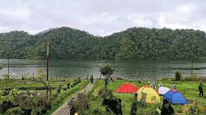

Tempat Wisata di Berastagi
Berastagi, sebuah kota yang terletak di dataran tinggi Kabupaten Karo, Sumatera Utara, dikenal sebagai surga bagi pecinta alam dan pengunjung yang mencari ketenangan. Dengan ketinggian sekitar 1.300 meter di atas permukaan laut, kota ini menawarkan udara yang sejuk dan pemandangan alam yang menakjubkan, menjadikannya salah satu destinasi wisata terpopuler di wilayah Sumatera Utara. Berastagi bukan hanya tempat untuk bersantai, tetapi juga kaya akan budaya dan sejarah, serta dikelilingi oleh berbagai atraksi alam yang memikat. Berikut beberapa tempat wisata yang wajib Anda kunjungi saat berada di Berastagi:

Gunung Sibayak |

Gunung Sinabung |
|

Danau Lau Kawar |

Pasar Buah Berastagi |